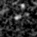
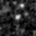
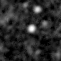
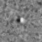
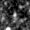
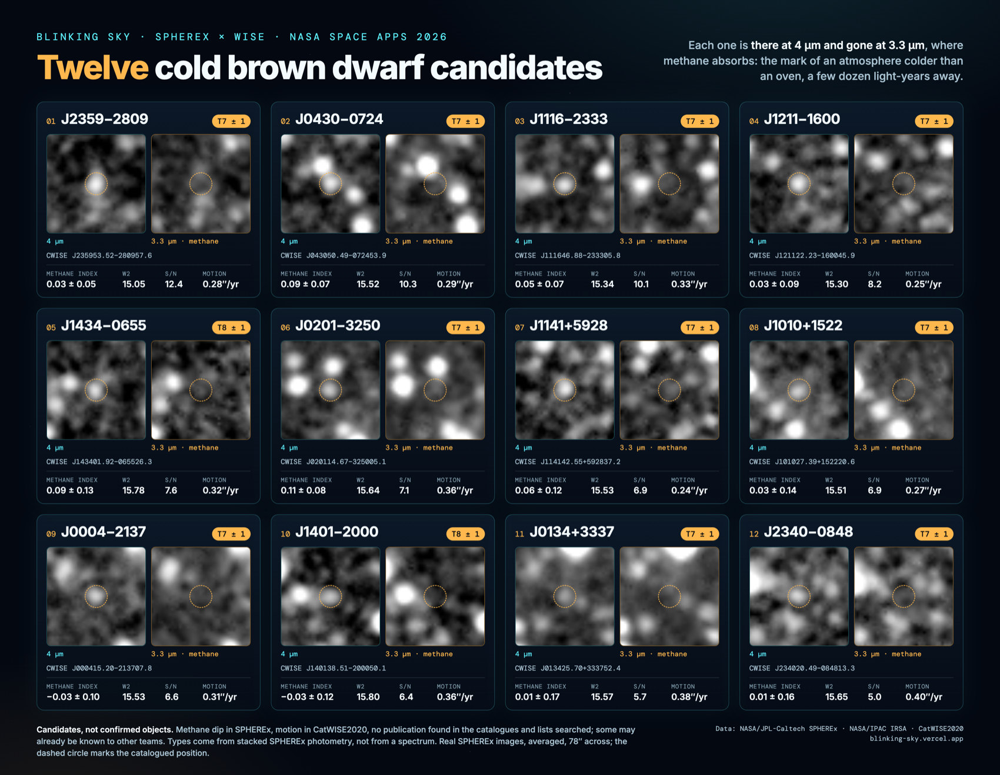

NASA Space Apps 2026
We are Apollo XXI.
Paul and Aziz · Planet X and SPHEREx
SPHEREx photographs the whole sky every six months.
Who looks at what changed?
A public web tool
Blinking Sky
Real NASA images. Blink them. See what changed.
WISE 0855−0714 · real SPHEREx images




May 2025Nov 2025May 2026What changed
Blink two dates.
What moves is close to us.
This brown dwarf is 7 light-years away.
Black: where it was. White: where it is now.
CWISE J2359−2809 · real SPHEREx images


4 µm3.3 µm · methane
Blink two colours.
Gone in the methane band:
a cold brown dwarf candidate.
Read live from NASA’s archive.
In your browser. Nothing to install.
Asteroids move in hours.
7,083 of them on the map.
Stars flare up: 4.4 times brighter.
Measured live, date by date.

The result
12
Blinking Sky is submitting 12 new brown dwarf candidates.
No publication found. Waiting for a spectrum.
The next one is yours to find.
382 more sources nobody has checked.
Data: NASA/JPL-Caltech SPHEREx · NASA/IPAC IRSA · CatWISE2020 · Music: Kevin MacLeod, CC BY 4.0